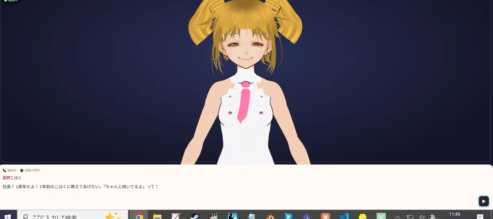
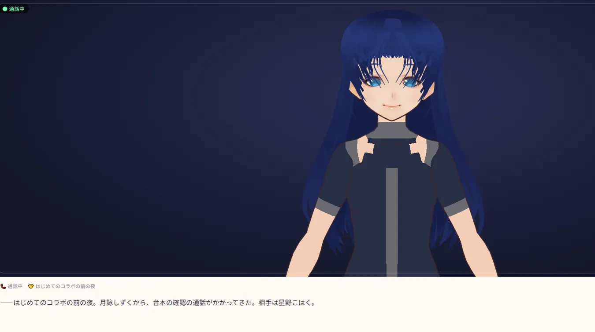
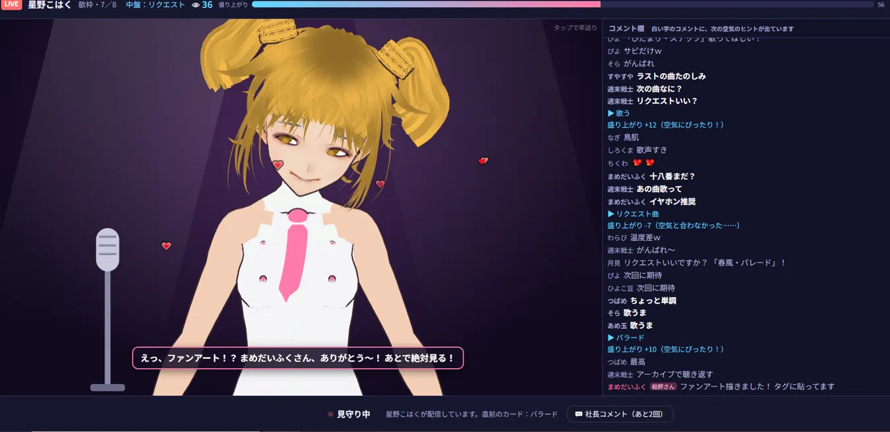

最初のオフィスはアパートの一室。所属する3人は、それぞれの家から配信しています。まだ知名度も資金も十分ではありません。
社長として、タレントを育て、活動方針を決め、案件を受け、疲れたら休ませる。タレントの得意なことやファンの気持ちを大切にしながら、事務所を少しずつ大きくしていきます。
星野こはく「社長！ 今日からよろしくね！ こはくたち3人で、いつか大きなステージに立とうね！」
『VTuber事務所シミュレーター』は、弱小VTuber事務所の社長となり、所属タレントの配信や育成、企画、収益化を支えながら、一緒に成長していく経営・育成シミュレーションゲームです。
最初のオフィスはアパートの一室。所属する3人は、それぞれの家から配信しています。まだ知名度も資金も十分ではありません。
社長として、タレントを育て、活動方針を決め、案件を受け、疲れたら休ませる。タレントの得意なことやファンの気持ちを大切にしながら、事務所を少しずつ大きくしていきます。

流れ星から生まれた見習い天使。元気でまっすぐ、歌枠にも企画にも積極的。新しいことに挑戦する姿がファンを引き寄せます。
開始時登録者：180人夜の図書館の司書。静かで控えめな性格。歌やASMRを得意とし、コラボを通じて少しずつ自分の言葉を見つけます。
開始時登録者：140人没落した財閥のお嬢様。落ち着いた話し方と熱心な一面が魅力。ゲーム実況や耐久配信など、新しい分野に挑戦します。
開始時登録者：200人
歌枠・雑談・ゲーム実況・ASMRなど、タレントは自分の好みに合わせて配信。プレイヤーは配信カードを選び、コメントの空気と盛り上がりを読みます。
歌・トーク・ゲーム・企画・表現を強化。限られた月間レッスン枠を使いながら、疲労にも気を配ります。
収益化、周年、スパチャ、コラボの前夜など、活動の節目に会話イベントが発生。返答次第でメンタルや絆が変わります。
歌枠リレー、多人数コラボ、1対1のお話し会、歌ってみた動画など、費用・準備・条件を考えて企画を実施します。
広告、スパチャ、ファンクラブ、案件、グッズ。収入源を増やす一方で、活動支援費や家賃など毎月の支出を管理します。
競合事務所のランキングや新人のデビュー、トレンドなど、移り変わる業界のなかで生き残りを目指します。
注目配信は、ただ結果が表示されるだけではありません。3Dキャラクターの表情やセリフ、流れていくコメントを見ながら、その場の空気に合う行動を選びます。
失敗して配信が盛り下がることもあれば、大勢の同時視聴者が集まる日もあります。盛り上がった配信から切り抜きが生まれることも。

ゲーム内1年目4月から2年目1月までをプレイ。バズ、初スパチャ、歌枠リレー、歌ってみた動画、ファンクラブ開設など、少しずつ成長する事務所の記録をまとめています。
登録者は520人から3,056人へ。それでも経営は赤字。いったいどうなるのか——詳しくはプレイ日記をご覧ください。